Повече от просто приложение за снимки
Лили всеки ден превръща обикновените снимки в динамичен, жив дневник на пътуването на вашето растение.
Прецизно заснемане
Нашият прост интерфейс на камерата ви помага да заснемете растението под същия ъгъл всеки ден за перфектни time-lapse видеа.
Плавно Time-lapse
Моментално сглобете ежедневните си снимки в зашеметяващи, плавни видеа, които можете да споделите с приятели и семейство.
Контекстуални бележки
Добавяйте текстови бележки, записи за поливане и детайли за почвата към всяка снимка, превръщайки галерията си в ценен запис за грижа за растенията.
Как работи: Разцъфтете в три стъпки
Настройте своето напомняне
Отворете приложението и настройте ежедневно известие за часа, в който искате да снимате вашата лилия. Ние ще ви подсещаме нежно.
Направете снимката
Използвайте вградената в приложението камера. Наслояване на предишната ви снимка гарантира перфектно подравняване, ден след ден.
Гледайте как расте
Приложението автоматично компилира вашите снимки. Прегледайте галерията си или генерирайте зашеметяващо time-lapse видео.
 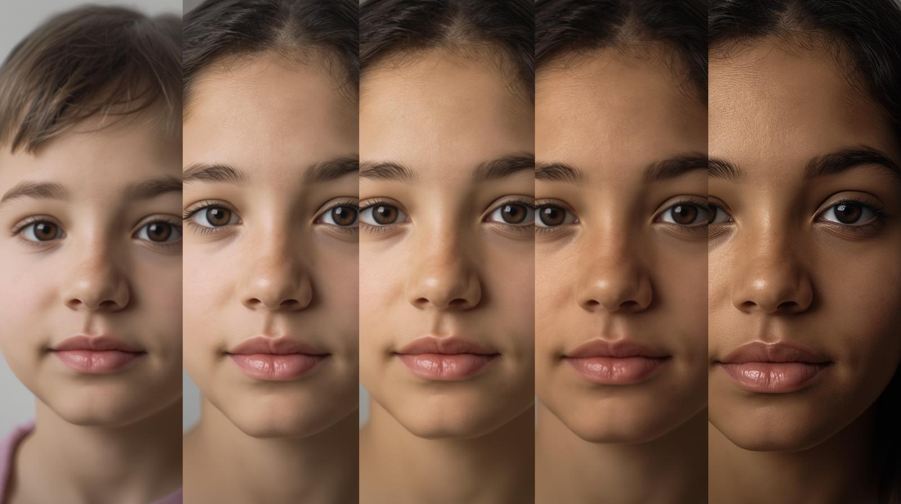
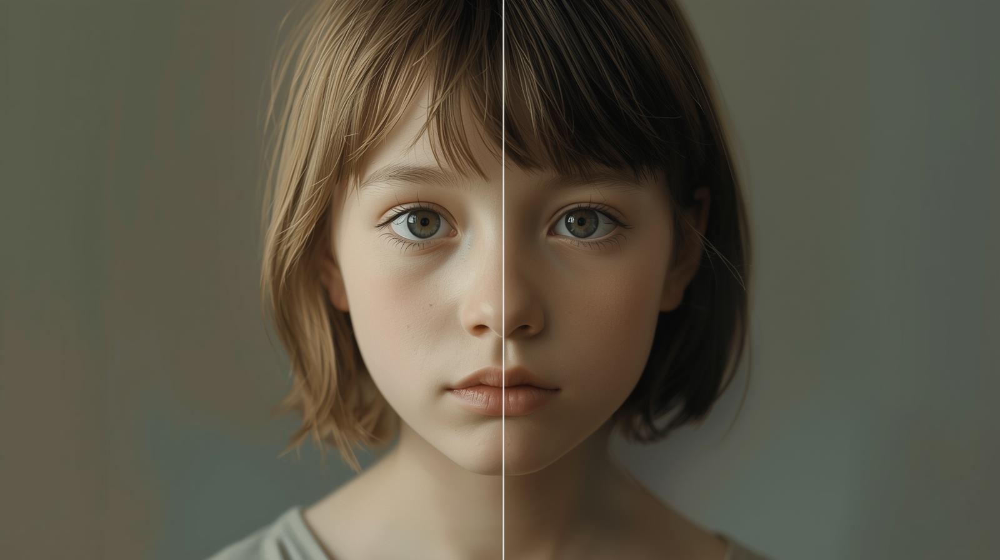
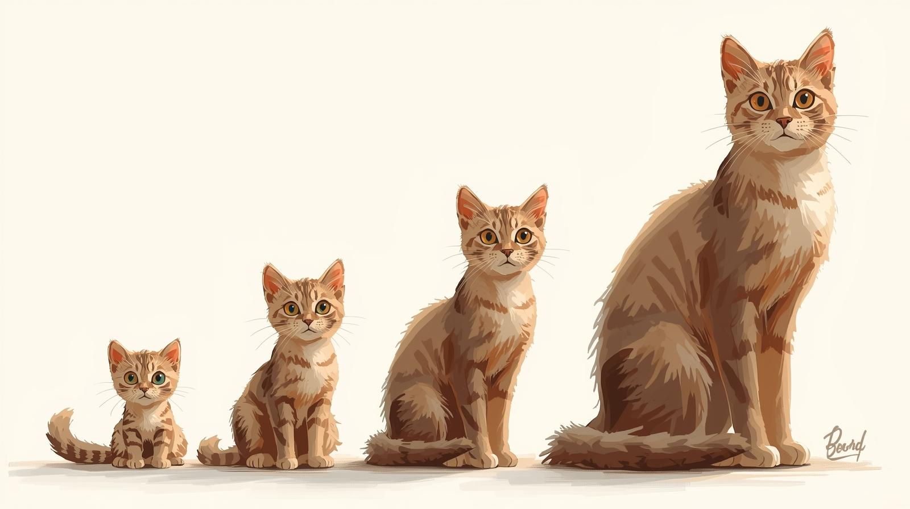
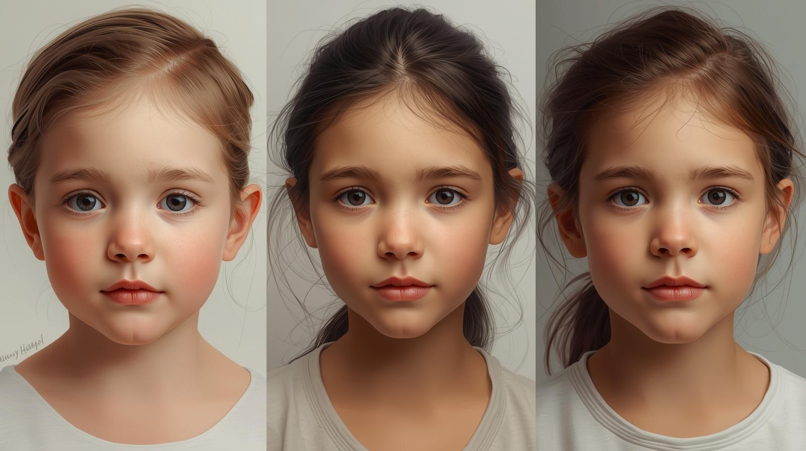
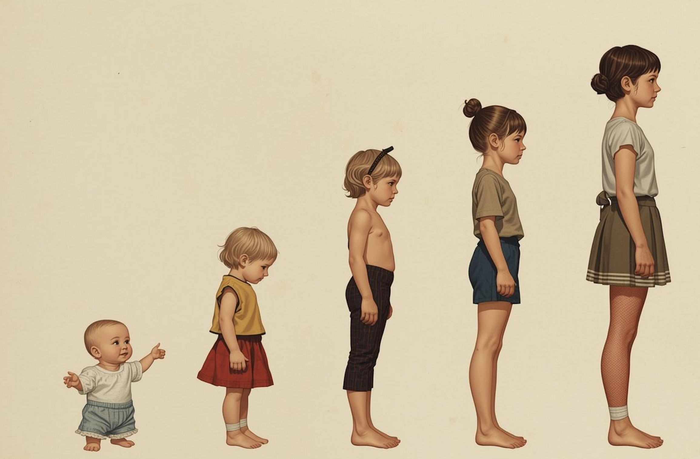
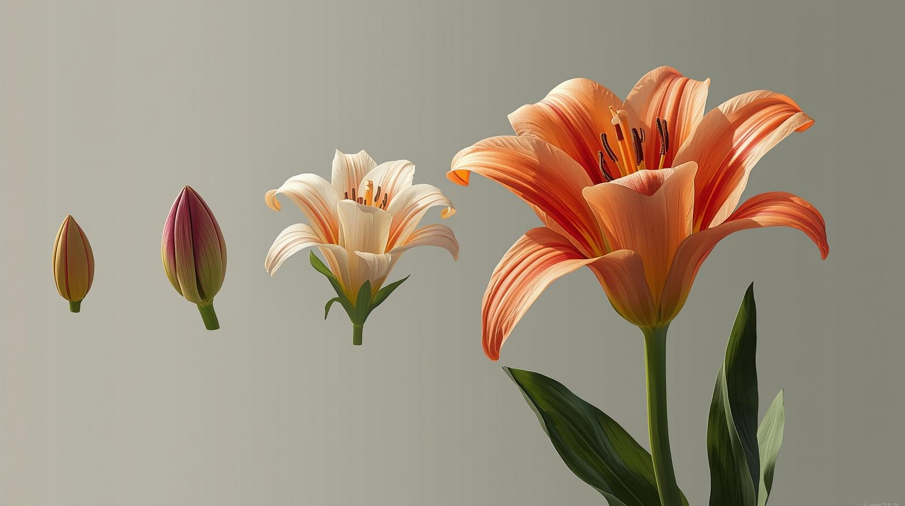
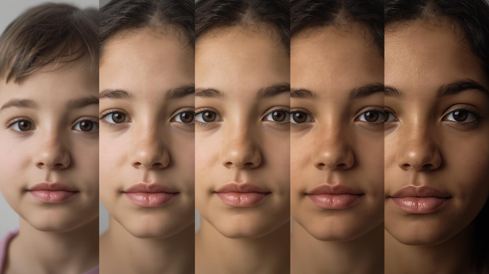
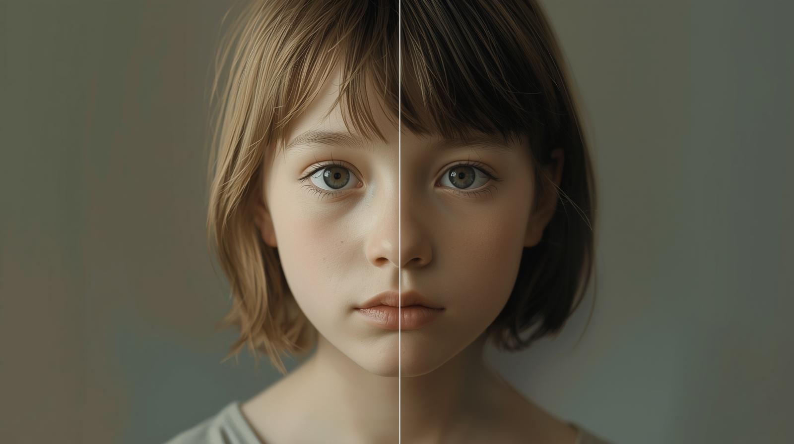
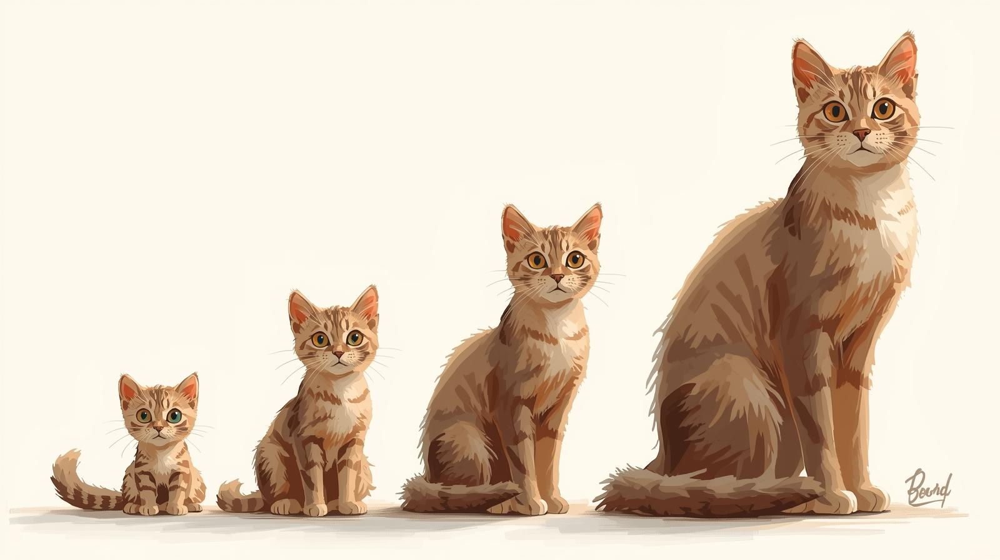
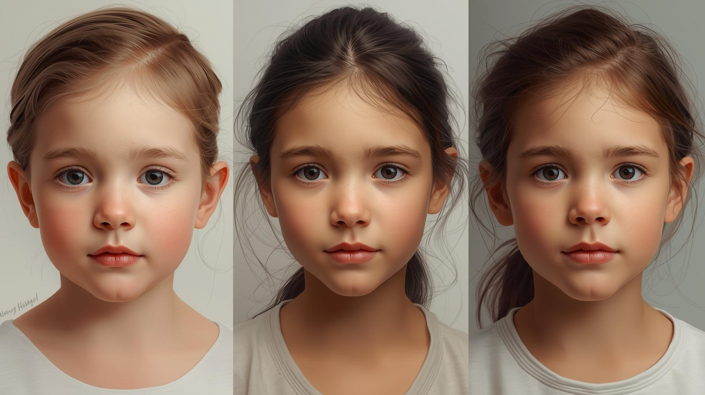
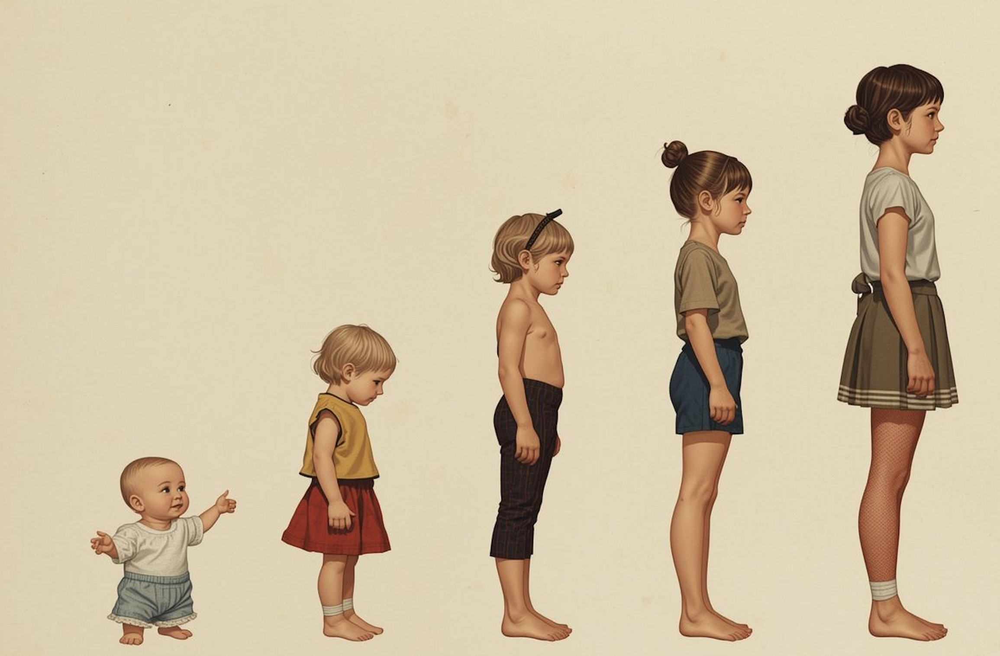
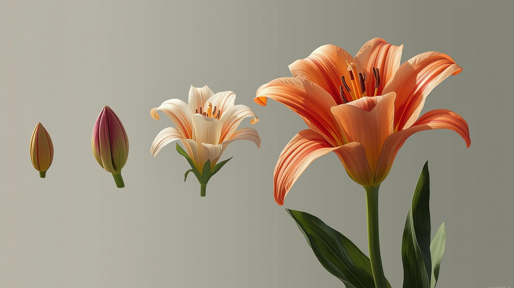
Изживейте отново всеки ден на растеж
Вашата Лична галерия е сърцето на приложението. Това е хронологичен визуален дневник, където всяка снимка е крайъгълен камък. Плъзгащата се галерия ви позволява без усилие да преминавате през дните, предлагайки уникално, осезаемо усещане за отминаващото време. Добавяйте бележки за проследяване на поливането, слънчевата светлина и промените в торовете, превръщайки вашата фотоколекция в мощен запис за грижа за растенията.
- Бележки към снимки: Документирайте рутинните грижи и наблюдения.
- Изглед Календар: Бързо преминаване към конкретни дати.
- Висококачествен Експорт: Запазвайте и споделяйте time-lapse видеа лесно.
Разцветът зад кода
Лили всеки ден не е създадено от корпорация – то е създадено от ентусиаст на растенията, точно като вас.
"Започнах този проект, когато исках да уловя магията на моята първа лилия, която разтваряше цветето си. Съществуващите приложения бяха твърде сложни. Исках прост, специализиран инструмент. Лили всеки ден е резултатът: проект, създаден с любов и съсредоточен изцяло върху отбелязването на растежа."
Ние даваме приоритет на простотата, поверителността и чистата радост от наблюдаването на разгръщащия се живот. Вашите данни остават на телефона ви и приложението винаги ще бъде фокусирано върху основната си мисия: документиране на пътуването на вашето растение, снимка по снимка.
Какво казват нашите потребители
"Ghagha gghahga ghaghga ghagggghaghhahhhahggagggha"
"Брат какво е това бе? Много е яко ама междудругото имаш ли някви къси 50лв?"
"Тука какво се прави? Това за какво е? Как се ползва?"
Присъединете се към Ексклузивния Бета Екип
Лили всеки ден в момента е Само с покана за Android. Търсим страстни потребители, които да ни помогнат да усъвършенстваме приложението преди публичното пускане.
Поискайте вашата Android поканаМестата са ограничени. Разкажете ни малко за любимото си растение в имейла!
Често Задавани Въпроси
Безплатно ли е Лили всеки ден?
Да! Лили всеки ден в момента е напълно безплатно за ползване.
Мога ли да използвам приложението за други растения?
Абсолютно. Въпреки че брандирането е насочено към лилии, можете да проследявате растежа на всяко растение, зеленчук или дори дългосрочни лични проекти като строителство.
Къде се съхраняват моите снимки?
Всички снимки се записват сигурно на вашето устройство (локално), гарантирайки, че спомените ви остават напълно поверителни и под ваш контрол.
Ще има ли версия за iOS?
Да, активно разработваме версията за iOS. Абонирайте се за нашия бюлетин във футъра, за да бъдете първите, които ще научат за старта ѝ!
Свържете се с нас
Имате въпрос, обратна връзка или се нуждаете от помощ с вашата покана? Свържете се с нас по всяко време на Lilly@everydaylilly.com